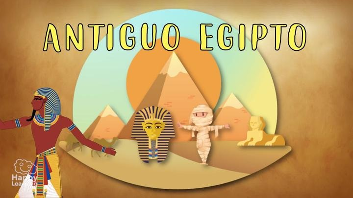
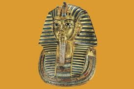

Cultura Egipcia, Ritos y Leyendas
Dioses
Creencias
símbolos
Templos
"Aprende de la cultura egipcia"
La cultura del Antiguo Egipto es una de las civilizaciones más fascinantes y duraderas de la historia, desarrollada a lo largo del río Nilo hace más de 5,000 años. Se caracterizó por su organización social avanzada, sus impresionantes construcciones como pirámides y templos, y una profunda conexión con la religión.
Los egipcios creían en la vida después de la muerte, lo que influyó en muchos aspectos de su vida cotidiana, desde la arquitectura hasta las prácticas funerarias. Su legado incluye avances en escritura (jeroglíficos), medicina, matemáticas y arte, dejando una huella duradera en la humanidad.
.png)

Ubicación y Geografía: Se desarrolló en el noreste de África, en un estrecho valle fértil rodeado por el desierto, dependiente totalmente del río Nilo para la agricultura y el transporte. Periodos Históricos: La historia se divide en tres épocas de esplendor: Imperio Antiguo (3100-2181 a.C.), Imperio Medio (2050-1750 a.C.) e Imperio Nuevo (1550-1069 a.C.), separados por periodos intermedios. Política y Sociedad: Sistema monárquico, absolutista y teocrático, donde el faraón tenía poder total. La sociedad era jerárquica, conformada por nobles, sacerdotes, escribas, soldados, artesanos y campesinos. Religión y Creencias: Panteón politeísta con dioses como Ra (sol), Amón (creación), Isis (magia) y Osiris (muerte). Creían firmemente en la vida tras la muerte, lo que llevó a la momificación para preservar el cuerpo. Cultura y Logros: Desarrollaron la escritura jeroglífica, hierática y demótica, descifrada en 1822. Construyeron monumentos famosos como las pirámides de Giza, templos y mastabas. Final: La civilización terminó con la conquista romana en el 30 a.C. tras el periodo helenístico.
.png)


.png)
Autoria: Adilene Pérez de los Santos 3°E